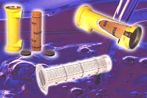

| heat |
| home page |
| Our hdd cooler also features an innovative ventilation system powerful enough to circulate cool air into and throughout any PC or external hdd case. This means that it reduces the possibility of data lost due to overheating. A simple way to protect data and hard drives from heat failure. This cooling kit has all the tools necessary to install a 3. . |
|  |